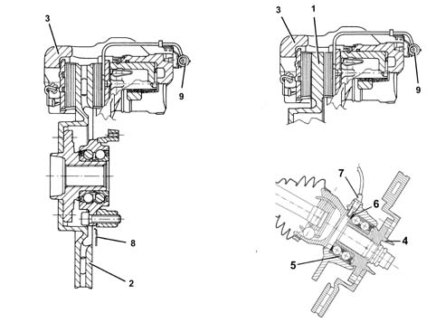

Introduction - DISC BRAKES
- Path
- Descriptions > 33 BRAKING SYSTEM > 3310 DISC BRAKES > Introduction - DISC BRAKES
- Kind
- system description
- Applies to
- all engines; all production periods
- Interactive page
- https://sloeber94.github.io/elrnDB-fPnd/en/#/2753473
Applies to: all engines; all production periods
The following front brake disc equipment is provided for this vehicle:
- 1.1 8v: solid discs, 240 mm diameter
- 1.2 8v: solid discs, 240 mm diameter
- 1.3 jtd: ventilated discs, 240 mm diameter

1 - Solid brake disc 2 - Ventilated brake disc 3 - Brake caliper 4 - Wheel hub 5 - Wheel hub bearing 6 - Magnetic ring 7 - Active ABS sensor 8 - Guard 9 - Brake pad wear warning light connection